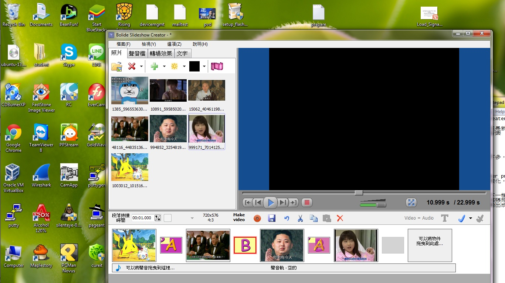
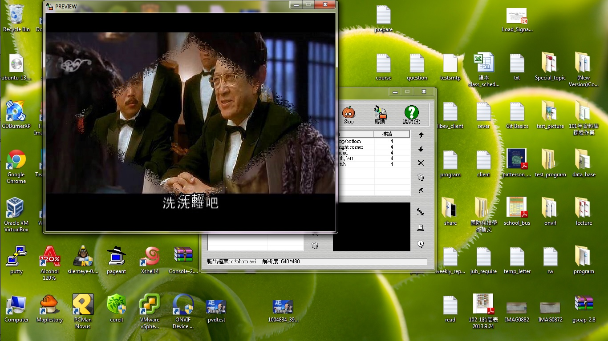
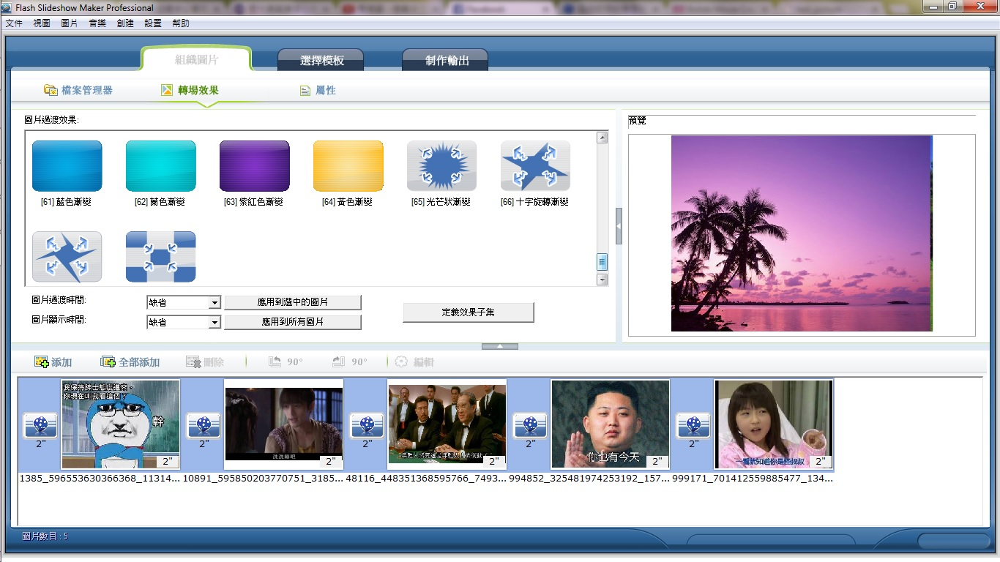
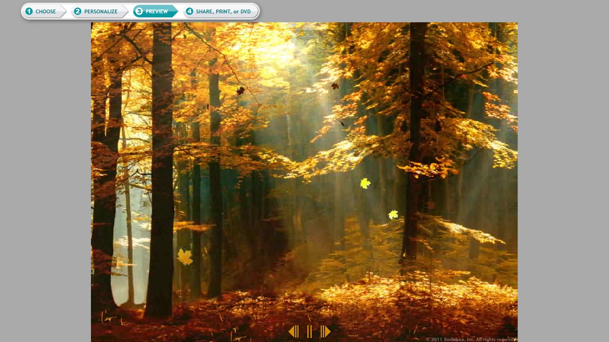

-
bolide slideshow creater

-
操作起來非常方便，但是就很死板的一張一張照片進來，然後照片跟照片之間有轉場的效果，有聲音軌能放背景音樂
-
photo slide show

-
基本上就跟上面的差不多，效果也就是那些淡入淡出翻轉之類的轉場效果，方便性的話就多了一個隨機效果。
-
flash slideshow maker professional

-
他的轉場效果比較多樣化，還有模板跟選擇輸出方式，可以直接顯示在網頁上看結果。
-
smile box

-
這個相較於前面幾個不一樣地方是，他可以選擇一個主題，然後以那個主題當背景影片，開始撥放自己的相片，每張照片進來的效果也都不一樣，字幕的話都可以加上去，可以預覽影片播放的樣子，但是輸出成影片檔就需要錢了